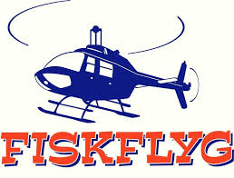
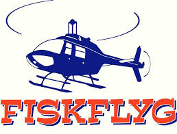
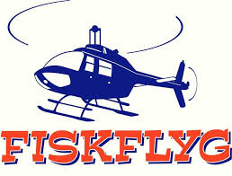

Våra samarbetspartners
 



Tre bröder gick runt bland stubbar och stenar. De såg potential för en golfbana. Klubben grundades den 1 juli 1989.
Den 7 juli var fyra hål färdiga. Lesslie Stuart från Luleå GK slog första utslaget.
Den 15 augusti invigdes den 9-hålsbana vi spelar på idag.
Den 18 augusti invigdes driving rangen i Jokkmokk.
Den 20 augusti höll Robert Karlsson en golfclinic på klubben.
Den 4 mars beslutades att anlägga nya greener. De första sex greenerna blev klara 14 juni.
Robert Karlsson slog invigningsslaget för det nya hålet den 8 juli.
Vår ordförande Alf Wallbing gick bort den 3 november. En stor förlust för klubben.
Den 2 juli sattes nya banrekord av Robert Karlsson (69 slag) och Michaela Bordeianu (79 slag).
Hemmaplan spelaren Albin Helin tangerade banrekordet vid klubb-mästerskapet.
